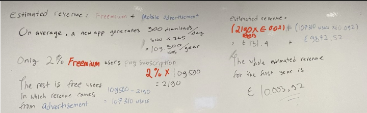

General Information
This branded website is publicly available at buas-media-interactive.github.io/my-website (please change text and hyperlink destination)
This website was created by… (only students listed below will be graded!)
- 223913 Carlotta Mas
- 220626 Sara Hoxha
- 221287 Vlad Dzitac
- 236139 Josep Hernandez Toledo
- 223951 Deborah Simatupang
Content
Please clarify here the match between students and pieces of content. Make sure that you provide a link to the correct page within the website
| # | Student ID | Value | Name and link of content |
|---|---|---|---|
| 1.Carlotta Mas | 223913 | Value | Accessibility |
| 2.Sara Hoxha | 220626 | Value | Empowerment |
| 3.Vlad Dzitac | 221287 | Value | Reliability |
| 4.Josep Hernandez Toledo | 236139 | Value | New Perspectives |
| 4.Deborah Simatupang | 223951 | Value | Discovery |
Production
Design Elements
Please provide a list of design elements alongside their justifications: Colour Scheme / with colour codes: Our colour palette was chosen based on the trendy colours during the 60s, which are the colours that were surrounding our targets childhood, as the website and product is focused on 60+ people. With this choice, we aim to bring a familiar feeling and nostalgia. Based on our lean canvas, we aim for this approach as our target audience relies better on what they used in the past and keep comparing the actual travelling system to the one that they used when they were young. For example, the preference of traditional maps over online navigation tools. On another hand, because of our target eyesight condition, we keep using bright and dark colours to create a clear contrast. This helps to draw a clearer picture and makes more readable the important content. Our target highlighted the importance of having distinctive colours, as it helps them to read better what it says in the app or in this case, the website. Through research we found some of the favourite brands of our target, and we decided to get inspiration from them to maintain the nostalgia and reliability feeling. We included motorhome brands (Most Popular Motorhomes of 2023 | Find My Leisure Vehicle, n.d.), confectionaries brands (Popular Confectionaries Among Baby Boomers GB 2022 | Statista, 2022), and supermarket chains (UK Baby Boomers: Most Popular Supermarket Chains 2023 | Statista, 2023). The colours that we selected are the following: Deep Blue #055160 RGB (5, 81, 96) The deep blue represents seriousness, it is a colour that brings a professional and sober feeling to the brand, aligning with our first value: reliability. These two concepts are closely connected through the perception of trustworthiness and dependability. Seriousness lays the foundation for reliability by demonstrating a genuine commitment to maintaining standards and fulfilling commitments. Also, this colour is included in the colour palette of some of the favourite brands of our target audience, like Aldi, Tesco or Adria. Scarlet #9B0000 RGB (155, 0, 0) Scarlet symbolizes courage and joy, mirroring the empowerment we seek to instill in our target audience. Its vibrant hue inspires confidence and vitality, reinforcing our commitment to uplifting and supporting our users on their journeys. Alloy Orange #FFA129 RGB (255, 161, 41) The colour alloy orange represents happiness, optimism and enthusiasm, besides bringing value to the lively feeling we want to give off, we also discovered throughout interviews and research that the many of the most loved brands by our target audience include this colour; brands such as Iceland, Sainsbury’s or Carado. White #FFFFFF RGB (255, 255, 255) White was chosen mostly as a background colour to bring the contrast previously mentioned and emphasise the other colours on the website, framing and brining the attention to the elements in the web. It also represents pureness and honesty, aligning with our values of reliability again, and accessibility, as it helps to highlight the other items included in our app and brand. User Interface Elements: Carousel Bootstrap: The Senior Road Guide image carousel is a functionality implemented using Bootstrap, designed to offer users a visually appealing and accessible experience to explore content shared from the platform's social networks. In order to provide an intuitive experience and facilitate content exploration, this carousel navigates between posts automatically, although there is also the functionality to navigate with the arrows manually. Facebook Embedded Post Plugin: With the intention of interconnecting our platforms and providing easy access to our Facebook group, we have implemented a plugin to display our Facebook page on the web, so users have a preview of the group's content from the website, as well as an easy and visual access to the community. Java Script Modal Cards: With the aesthetic intention of not overloading the main page with information, we have represented our brand values by means of visual modal cards, which when interacting with them highlight their functionality and when clicked show a card with detailed information. For the application of this functionality we have implemented Javascript code that allows opening the cards, as well as closing them not only with the cross but also by clicking anywhere outside the card to facilitate navigation between them. Scroll Animations Java Script One way to dynamize the scroll on the web page and produce a captivating effect on the user experience has been to implement scroll animations that when navigating the page are activated and show the facebook logos as well as an animated arrow that emphasizes to continue navigating. Download Buttons Download buttons that represent the aesthetic characteristics and logos of the official store of each operating system, as well as a textual description, being clearly representative of its functionality to navigate to the specific store to download the application, at the same time, they have a Hover animation that makes them stand out as buttons among the different elements of the web. Dropdown Menu (Mobile Version) Making use of the responsive features offered by Boostrap, we have adapted our top navigation bar to adopt a Dropdown Menu format when running in mobile format, thus optimizing the space in the vertical format and facilitating access on small screens, making the options larger and occupying a larger vertical space to operate the menu that can then be closed to have more visible information on the website. Sticky Top Navigation Bar: With the aim of enhancing accessibility, the top navigation bar is designed to remain consistently accessible at all times, for that, we have implemented that once the user continues browsing, it remains static and accessible at the top of the screen, regardless of the scroll that the user has made, facilitating navigation between pages. During the tests, all users have navigated between pages once they have viewed the page in its entirety without the need to scroll back to the top of the web, improving the user experience through this functionality. Organization of the navigation and content: The website has a simple design, the different sections are based on a vertical display of the information in a visual way without being overloaded, for this each page is independent and contains all the specific information of that section, to facilitate navigation between pages, each of the sections shows a top navigation bar indicating the name of the different sections of the web at all times. The different functionalities seek to be intuitive, for this we highlight the interactive functionalities by means of animations and visual elements, at the same time it has informative texts and functional multimedia elements to represent the functionalities of our produc
-
A colour scheme (with HTML colour codes, which must be consistent with your final website)
— see the example below from the BUas brand book:
- #EE7622 The orange colour refers to the Dutch identity and the city of Breda (Oranjestad). Orange stands for…
- #00406B Dark blue signifies…
- Font Choices: Following the advice given by our interviewees we decided to go for a clear and easy to read approach, keeping it simple and Website text: Helvetica: Headings Its sleek lines and balanced proportions convey professionalism and reliability, mirroring our values of transparency and trustworthiness. By using Helvetica for headings, we emphasize the importance of clarity and credibility in our brand messaging. Raleway: Navigation Bar Raleway is sophisticated and elegant, making it an ideal choice for our navigation bar. Its refined appearance communicates our dedication to providing a seamless and intuitive user experience. By using Raleway, we signal to our audience that we prioritize accessibility and ease of navigation, reinforcing our brand values and commitment to customer satisfaction. Segoe UI: Text (Body) Offers excellent readability and legibility, ensuring that our body text is easily accessible and comprehensible to all users. Its clean design reflects our commitment to inclusivity and accessibility. By using Segoe UI for body text, we demonstrate our dedication to providing clear and engaging content that resonates with our audience. At the same time, is a casual and friendly font, a style that we aim to approach through our visual identity and marketing strategy. Logo: Bank Gothic, this font is similar the one used in the motorhome brand auto trail, one of the brands we took as inspiration to our visual identity as it is familiar and preferred by our target audience. It is a quite thin font, that is why we decided to make it bold, to align with our consumers eyesight necessities explained in the lean canvas. This way, it is easier to read, a thick and visible font. It keeps the serious feeling of the brand, as it is a stylised print font.
- User interface patterns (e.g. grids, carousels, menu organizations etc.)
- The structure of the navigation and content (e.g. how content units are distributed across pages)
- All these elements must be justified by referring to the theory and/or vocabulary of design
- Please relate these elements to other units, for example:
- How does website design fit the values and personality of the brand?
- How does website design fit the marketing and communication strategy?
- How does website design help showcase the unique value proposal of the product?
Credits
Please provide links and/or credits for third-party elements including:
- HTML templates if these are different from this one (buas-media-interactive/prj4-group-template)
- The source code for UX patterns other than the ones provided by the “Bootstrap” library (see getbootstrap.com/docs for a list of such patterns)
- Images that were not produced by students themselves, including when crediting is not mandatory (in other words, we ask you to credit Unsplash images)
Testing Report
Please write about…
- Your testing goals –Testing goal: Our goal is to test if our target audience understands the purpose of the website which is to provide them with a navigation app that allows them to look for routes that are recommended by other users and directly engage with them. Having seniors as our target audience and based on research, we chose simple and bold design choices and colors that can easily stand out and be seen.
- Your testing methods, which includes information about:
- The test’s participantsTesting methods: We tested 3 seniors on campus using our laptop and 1 was tested online via WhatsApp. The instructions given were to first experiment and observe the website, especially the home page so they can have an idea of what is the purpose of the website. We asked questions like if they could find where the values are and if they could click one. Also, we asked if they could find more information about the product and if they could click on one of the videos and try to explain what the video showed. Lastly, we asked where they would join the Facebook community. During the testing, we first asked for consent, and we took pictures of the users experimenting with the website on the laptop.
- Your testing results, which includes information about:
- There was a lot of positive feedback with the choice of colors most were impressed because the mix of red, blue, and orange is difficult to match, however, based on the website, it was liked, and we got a compliment of being creative to manage to make the colors look pleasant all together. The overall layout was liked, and it was easy for the users to find what we asked them during the testing. The simpler style was liked as it did not have a lot of patterns that can make you not concentrate because usually a lot of patterns in the body of a website are complex and all over the place. The purpose of the website was understood, however, we did not have the descriptions of the app below the videos because the content part was delayed, so that way things were more confusing. So instead, we explained the situation, and the app was understood. We got good feedback for the concept of the app and that they would download something like this as it would be helpful and easier to engage with users that way. We were told that the resolution of the videos is a bit low and that the text is not fully readable, but the purpose of the videos is to show visually the app and for more information, the descriptions of the app would be below the videos on the product page.
- Future improvements: We could improve the part where on the product page, we could put an option that users have the sense to scroll down to see if there is more content on the website. During testing, users would pause the videos to watch what they are about and open another tab like community.
Marketing
Context of campaign and promotional activities
A. Context of campaign and promotional activities 1. Message Our product (Senior Road Guide: campervan navigation app) is a user-based info and collective travelling. So, we need to foster a sense of trust between brand-followers and followers-followers in our social media platforms to push interest towards our app. The main messages we want to communicate through our promotional activities both on our facebook and twitter pages are based on our brand values. One value for one post. Our brand values are as follows: Reliability, Empowerment, Accessibility, Discovery, New perspectives (see “Content” section of the corporate page for explanation on each value). This decision is driven by the goal to not only create sympathy between customers and our app but also our Brand identity. On the other hand, for facebook group the messages we want to communicate are fostering a community through sharing insights and bonding activities. This decision is based on the most engaged behaviours we identified in campervan facebook groups (see “Platforms” in Communication and media plan). 2. Execution: * Facebook and Twitter page Reliability, Empowerment, Accessibility, Discovery, New perspectives. Two different posts everyday communicating one value and showing an app function that correlates to that value. For example: The caption is set to communicate the value “Accessibility” as it shows the ‘download offline’ function of our app. This function allows users to access complete navigation and information of their chosen route and destination offline. Then, we will revise this post into Twitter format (lesser characters, more casual language): Additionally, we will also be promoting our Facebook Group in our facebook and Twitter page by posting reminder contents such as highlighting how many members have joined in a period of time. * Facebook group Content activities with () were suggestions by Chat GPT. Bonding: 1. Weekly highlights of “events by members”. 2. Weekly bonding posts: to push members to share their stories. * *Retirement Adventure Stories* * *Senior Traveler Spotlights* Insights: 3. Weekly insights on travelling: * *Senior-Friendly Routes* * *Campervan Accessibility Tips* * *Relaxation & Wellness* * *Slow Travel Philosophy* * *Multi-Generational Travel* * *Safety & Health Tips* Our app: 5. Update on new routes added in our app * Weekly fun facts on locations / activities on highlight countries. * Weekly tips and tricks on travelling on highlight countries. * App download link on every post Communication and media plan 1. Target Group Our target group are 60+ year old campervan owners from the UK who travel to Europe. This decision was derived from data that shows: * UK sits at number 3 of the top 3 European countries with the most campervan owners. The first being Germany, then followed by France (European Caravan Federation, 2023). * We targeted UK since we are the most familiar with their language and culture. * The average age of these UK campervan owners are 63.2 years old (Camping and Caravaning club UK, 2024). * Nearly all of the top 10 travel destinations for Brits outside of the UK are in Europe (only excluding Turkey). The top 3 being: Spain, France, and Greece (McKenna, M. & Pennarts, M., 2023). 2. Platforms Platforms that our target groups use, and our brand will utilize are Facebook and Twitter. This decision was derived from data that shows: * In 2020, Facebook was the number one social media platform used by Brits 56 years old and older leading by 72%. This is followed by WhatsApp (63%), YouTube (52%), then Twitter (28%) (Statista, 2020). * Despite WhatsApp and YouTube attracting higher usage than Twitter, our target group does not utilize them for travelling purposes. Instead, Facebook (14%) and Twitter (5%) influence their travelling decisions the most. (Statista, 2017). S 3. Behaviours From observations of campervan Facebook groups and pages these are what we have gathered regarding their behaviour: * What do they communicate? - Selling campervans - Asking for campervan activities and solutions -Sharing tips for travel, where to go, how, routes, km, price, gas prices, locations nearby campings - Personal stories, friendly communication with narrative - Compliments and reply - Engagement with each other post - Bonding posts - Merch * How do they communicate? - Emoji - Warm - Simple graphics - Personal stories, friendly communication with narrative - Messages written as if they were talking in real life - Functional, less hobby-like - Conversational language Appendix 5. On the other hand, Twitter users have similar behaviours with minor differences such as: * There is no seperate Twitter page dedicated for campervan owners/travellers. * Our target group interacts with each other directly via their personal accounts. * More casual, less informational content. * More use of hashtags (examples: #campervan, #travel, #vanlife, #camping, #outdoors, #adventure, #holidays, #UKtravel) Important details/keywords for both platforms are: - Close to retirement/Retired - Travels to Europe - Fishing, cycling - Campervan clubs, sense of community - Nature lovers - Campings - Traditional food and events 4. Communication objectives We will base our communication objectives from existing campervan UK facebook groups. There are two types of groups, a public and a private one. For public groups, examples we observe are Van Life UK group (133.5k members, created in 2023, created in 2019) and Van Life – UK (272.6k members). On the other hand, for private groups, we observed: Fulltime Van Life UK (32.2k, created in 2016) and UK Van Life on the Cheap (38.2K, created in 2022). Each types have similar numbers and year of creation. If we apply both numbers to our context, public and 3 weeks of posting the Reach objective will be: * Median betwen years created is 2020 * Current year is 2024. So, we calculate the exponential growth in 4 years. * Median members in 4 years is 119.1k * Apply that number to our 3 weeks execution. Reach objectives are 1.8k members (combined) * Since we are utilizing both a facebook group and facebook page, we will divide those numbers into 60% facebook page and 40% facebook members. Meaning, 1k members facebook group and 720 followers facebook page. For Twitter, since there is no Twitter page dedicated to campervan owners/travellers' communities. We will be basing the objectives from leisure vehicle brands. Top 5 campervan (Fine My Leisure Vehicle, 2023) brands in the UK utilizing Twitter are: Auto-Trail (1.8k followers, created in 2011) and Roller team UK (345 followers, created in 2017). If we apply the numbers to our context, 3 weeks of posting the Reach objective will be: * Median between year created is 2014 * Current year is 2024. So, we calculate the exponential growth in 10 years. * Median followers in 10 years are 1.7k * Apply that number to our 3 weeks execution. 8 followers in 1 month. However, we aim for 20 followers. Regarding other objectives. Based on our brand values, particularly, empowerment, discovery, and new perspectives, our affect objective will be to inspire. Consequently, for our response objectives, we will focus on gaining 1 comment per post. The reasoning behind this is because data has shown that “liking” a post is not always motivated by sincere interest to the content posted. By contrast, motivations include loyalty to brand/person, or out of spite (Vice, 2018). However, when accounts comment it is based on drive to engage with the content since comments expresses personal opinions/thoughts (Stampede Social, 2023). Translate these objectives to the SMART method: * Specific: Weekly promotional posts on Facebook and Twitter pages, Weekly community posts on Facebook group * Measurable: 1k facebook group members, 720 facebook followers, and 20 twitter page followers. * Attainable: These calculations are based on existing and relevant campervan brands/communities' platforms. Hence, they are attainable. * Relevant: Our product (navigation app) is user-based info and collective travelling. So, we need to foster trust between brand-followers and followers-followers in our social media platforms to push interest towards our app. * Time bound: 3 weeks of active posting. 5. Media Tactics Platforms we will use: * Facebook page * Facebook group * Twitter page Time of posting (both social platforms): * 8-9 am (informational content) * 1-5 pm (social content) The reasoning behind these timeslots is because they are the most optimal posting time for UK audiences. Moreover, they are usually set in productive tasks in the morning and light social activities in the afternoon, for instance, lunch breaks while engaging with these social platforms. Consequently, we will post informational content in the morning timeslots and social content in the afternoon. Translate to our promotional campaign, for example, in fakebook groups we will post insights posts in the morning then bonding posts in the afternoon (Optimal SEO UK, 2023). Copy and visuals: * For visuals we will be stock images design independent visuals that align with visual behaviours of our target group (use of Emojis, Warm, and Simple graphics) alongside our brand visual identity (see visual identity in “Content” or “Professionalism” section). On the other hand, our copy will align with language behaviours of our target group (Facebook: Personal stories, friendly communication with use of narrative, Conversational language) (Twitter: More casual, less informational content, more use of hashtag). Since our team were raised in a different generation from our target group, hence; unfamiliarity with the language behaviours, we will be using copy generated from Chat GPT for the first 2 weeks of posting then our own copy for the rest. B. Learning Points 1. Data analytics * Facebook page Content analysis * Facebook page * Facebook groups * Twitter 2. Performance summary Points of successes: Facebook page and group * An average of 6,3 reaches per post. A steady number considering nearly all posts reached this number. Only excluding one post on Wednesday, 13th March: updated cover photo, however; this is not a relevant post to our campaign to be evaluated upon. * High reach posts were published within the planned time bound, 8-9 am and 13-17 pm. The posts: (picture) 10 reaches (picture) 9 reaches Posts with links to click garnered most engagement. The following is the post with the most engagement: (picture) 17 impressions, 8 reach, and 9 engagements Example post with healthy reach but zero engagement: (picture) 6 reach, 0 engagement Nearly 50% of our facebook group members are within our target group (55-65). Additionally, new insights are gained as following this number is 45-55 years old showing approximately, 40%. Points of failures: Facebook page and group: * Our initial response objective was not achieved, 1 comment per post. Engagements were higher on likes and link clicks. Even after we introduced a fake profile of our persona, David Jones, assuming that members would be more comfortable to engage after seeing someone else that is not the admin perform it. The David Jones profile and engagement: (picture) David Jones posts as a member in our facebook group (picture) David Jones’ facebook profile (all pictures used are free stock footage) * Reach objective was also not achieved. Only 5 facebook page followers and 18 facebook group members gained. Twitter: * All objectives in Twitter were not achieved. Only 3 followers, 9 impressions, and zero engagement. Other: * Lack of content planning * Inconsistent posting Based on this summary of insights, it can be concluded that it is important to schedule posts during the proven effective timeslots. Additionally, despite failure in achieving the response objective of 1 comment per post, we gained steady engagement via likes or views. For instance, in our facebook group, every post gained 1 view. This may prove the effectiveness of our visual content as all the posts were accompanied by a supporting visual. Regarding captions, numbers showed that captions generated by Chat GPT performed similarly with those captioned organically by us. The difference lies on the call to action. In every post, the call to action was either “learn more in our website” or “learn more in our facebook group”. However, most of the time, the links to both actions are not present. We should have included direct links to the website or the facebook group as executed in our top performing post (see data analytics sections) where the call to action is to join the facebook group and the link is given. Another alternative could be redirecting the audience to click the link in our bio (to avoid repetition). Another important learning point is the facebook objectives, after executing these promotional activities, it is evident that we should have determined different affect and response objectives between our facebook page and facebook group. Since, we are only posting about our brand and product instead of initiating bonding activities, an awareness affect objective and “likes” response objectives would be more relevant. Moreover, with our reach objectives, most of our followers and members were gained in the first few days of launching our platform. Engagements were also higher. The content posted in the beginning were only introductory posts. However, when we started to post about our product with call to actions like “click on our website to learn more”, followers did not grow since it is obvious that our product was not real, or at least ready to be purchased. Audiences may feel distrust from the misalignment of our content and actual product. Points of failures were more evident in our Twitter page. We only gained 3 followers, with only 9 impressions in 18 days and zero engagement. One major reason is that our Twitter contents were only shortened versions from our Facebook page. The tone of language was not adapted accordingly (More casual, less informational content). Moreover, the objectives that were also not relevant. One behavioural difference that we missed between Twitter and Facebook is that Twitter is more interaction-focused (Twitter threads) rather than content focused. Inspire affect objective and 1 comment per post reach objective are not relevant for this behaviour. An example posts from our Twitter page: (picture) These are points of failures that are feasible to be evaluated and improved in the time of execution. However, due to our lack of content planning, this was not possible. Our content planning was made only 1-2 days before postings schedule, hence; the apparent gaps in our content planning table. Our posting was very inconsistent. Content should have been prepared and ready to publish at least a week before the scheduled date. Moreover, existing successful social media platforms, especially, facebook groups not only post regularly but multiple times in the day: (picture) Lastly, a content filter system would have helped made our content planning process more efficient. A reason for our inconsistencies was trouble in dividing tasks between members. Moreover, figuring out a “control” system to determine that every member’s work was aligning to our brand identity and marketing objectives. C. Future planning In addition to our learning points, if our team were to continue this campaign there are other factors that we need to consider: * Utilizing Boost post to reach more accounts. As our reach objectives are hight while our time bound is short. * Other facebook behaviors to include Utilizing the chats by sub-group in Facebook groups. This enables higher interactions directly with other members and increases engagement in the general facebook group overall. Example: (picture) Comparing the behaviours and activities between facebook groups. Many Facebook groups had similar staring dates, are both the same type (public/private) yet has drastic differences in the numbers of members. Our current execution was only based on behavioural observations of one Facebook group. For example: (picture) Both facebook groups are private, started in 2016, and from the UK but has 25k+ differences in memberships. * The casual personality of Twitter: Shortening the characters from our Facebook posts was not sufficient as Twitter has different behaviours to Facebook, despite attracting similar target groups. Since there are no “Twitter group” function, it is important that a Twitter account not only had an impressionable page but a strong Admin personality. This is because most engagements in Twitter happen in the interactions between followers and Admins in a Twitter thread. Although from a different industry, an effective example of a strong Admin personality and presence is the fast-food brand, Wendy’s. Their Twitter Admin is known for having a feisty, direct, and sometimes sarcastic personality. This heightens interest to interact as interacting with Wendy’s does not only feel like interacting with a customer service but an actual person, a friend they have fun with. Additionally, a point of strategy worth modelling is they leverage user-generated content (similar to Facebook groups) (McCall, 2021). * Utilizing WhatsApp as another social media platform: As stated in our Communication and Media plan, Facebook and Twitter were the chosen platform because of the popularity of their use among our target group’s age and interest in travelling. However, the difference between the usage of Facebook and Twitter are drastic: (picture) On the other hand, other social media used by our target age demographic are: (picture) Even though, Whatsapp was not referenced as a platform for travelers, it is worth experimenting with as it is a popular platform betwen our target age group in general and the platform is used for community and direct engagements with other users, comparable to our product, brand values, and message of our campaign. D. Professionalism 1. Vision We aim to help elderly travellers feel valued and purposeful 2. Visual Identity (picture) 3. All content posted

Management
Lean Canvas
Fill in at least 2 bullet points per building block and according to the rubrics.
Problem
- List your top 3 problems you solve for your target group(s).
- Describe briefly how the problems are solved now (existing alternatives).
- First, we will analyse the three problems that we identified before conducting the problem interviews, based on our own research and assumptions: Non-updated campervan routes on traditional maps Based on research, most of our target audiences used to navigate in their travels using a traditional map. However, most traditional maps are not equipped with the latest info on campervan routes. Hard to navigate digital maps Digitial maps like Google maps, Waze, and the likes are more updated in this regard, however; the UI/UX design of the apps are too hard to use for our target audience of 60+ year old. They trust real people more than search engines Another important point from the research is that our target audiences mostly search for information for their campervan travels not only from traditional maps but also advice or insights from fellow campervan travellers. This is why most refer to Facebook groups, campervan communities, and the likes. After conducting our problem and solution interviews, we found out that there were some more problems that downgrade the campervan journey experience of our target audience and, we realised we were wrong about some of the assumptions we made: Non-updated campervan routes on traditional maps We confirmed that our target audience prefer traditional maps over digital tools, but they are aware that the traditional paper maps are not updated, and they may encounter difficulties planning their routes. Eyesight limitations Our target audience (60+) pointed out that because of their eyesight limitations they encounter difficulties when reading indications on a phone screen, as usually the icons and fonts are very small and thin. Navigating to remote places without connections The campervan travellers that we interviewed are most likely to travel to remote places and foreign countries, that being said, they usually have problems related to data and Wi-Fi connection. Their routes become a challenge as at some point they must figure out how to continue without internet. Fake or misleading routes Some of our interviewees have been in the situation of being “scammed” about the routes they take, driving through misleading or fake routes, arriving to wrong destinations, and not being able to enjoy the trip because of incorrect descriptions of the expected landscapes. Destination focused info in navigation services Campervan users use this system to travel because of the journey it requires to get to certain destinations, and not because of the destination itself. It was remarkable for them how most of the navigation tools are focused on how the destination looks like, instead of what they should expect of the journey. They are interested in travelling through beautiful roads and interesting stops on the way. Accessibility limitations to everyday places (for example: supermarkets, gas stations, public bathrooms, etc) Our interviewees pointed out that it is a big problem and a limitation to not know where you can drive with the campervan, for example if the supermarket they stop by has parking slots big enough to fit a campervan, or towns they want to visit on the way that do not have roads prepared to driving a campervan. That is a time-consuming problem they have; it delays their routes when encountering situations that present this difficulty. Time consuming and complicated planning (for example: more campervan parking spots or camping sites needs to be book in advance) This is a problem focused on camping and campervan spots availability. Our interviewees spotted a very big difference between how they used to travel when they were younger and now, as nowadays everything happens online, they cannot just go to any camping site and spend the night there without making a reservation first. It is time consuming and more complicated to plan a fluid trip this way, as they must check site by site if there is not parking available, or if they must pay.
Solution
- Outline the brand solution(s) you have for the above problem(s).
- To solve the problems mentioned above, and before conducting the solution interviews, we came up with a few solutions: An updated digital map designed like a traditional map Our first solution is to combine the important features of digital maps (updated routes) with the important features of a traditional map (zoomed out map, traditional map icons, etc). Route information is user based Our second solution is that all route information's are added by users. So, users can add routes with other important information and users within the same route can interact with each other. Offline download for routes The third solution we implemented is adding the option of downloading your route, so when the travellers encounter the situation of being in an offline area, they can still follow the correct way and continue their travel without wasting time. Street views of the route itself And lastly, to have a more insightful view of how their journey it's going to be, we added the function of a street view system where they can check how the way to the destination looks like, instead of a street view focused of how the last location looks like. And after conducting the solution interviews and testing the prototype we added on some more solutions that would be appreciated by our target, including some of their suggestions. User verification system Even if we deleted from our problems list the first assumption we had of “They trust real people more than search engines”, our target wants to make sure that the routes are taking have been verified by someone else before, mainly because we have the function of designing your own route to share with other. To maintain a safe and correct system, we decided to add a user verification system, as if gives to the travellers the feeling that they are taking the right roads, and they wont end up traveling to a wrong destination. By implementing a user verification system, travellers can have more confidence in the accuracy and reliability of the routes they follow. Bigger icons and fonts Conducting our solution interviews we realised that our interviewees asked many times “What does it say there?” or “I cant read it, its very small”. Aligning to our previous mentioned problem, focused on the eyesight limitations of our target, we decided that a great solution would be to make the fonts and icons bigger, more readable and with more distinctive colours. More specific Add a route system (For example: mandatory for route to have accessible everyday places and parking) To solve one of the biggest concerns of our target audience, which is about having trouble with the accessibility, we decided to implement some mandatory items when creating your own route such as: accessibility to nearby supermarkets, gas stations, availability of parking spots, nearby public bathrooms and more.
Customer segments
- List your target customers and/or users.
- Describe briefly the characteristics of your ideal customer (early adopter, brand persona).
- Our target group was 60+ year old campervan owners from the UK who travel to Spain. This decision was derived from data that shows: UK sits at number 3 of the top 3 European countries with the most campervan owners. The first being Germany, then followed by France (European Caravan Federation, 2023). See appendix A.1.1. We targeted UK since we are the most familiar with their language and culture. The average age of these UK campervan owners are 63.2 years old (Camping and Caravaning club UK, 2024). Nearly all of the top 10 travel destinations for Brits outside of the UK are in Europe (only excluding Turkey). The top 3 being: Spain, France, and Greece (McKenna, M. & Pennarts, M., 2023). Platforms that our target groups use, and our brand will utilize are Facebook and Twitter. This decision was derived from data that shows: In 2020, Facebook was the number one social media platform used by Brits 56 years old and older leading by 72%. This is followed by WhatsApp (63%), YouTube (52%), then Twitter (28%) (Statista, 2020). See appendix A.2.1. Despite WhatsApp and YouTube attracting higher usage than Twitter, our target group does not utilize them for travelling purposes. Instead, Facebook (14%) and Twitter (5%) influence their travelling decisions the most. (Statista, 2017). See appendix A.2.2. In the end, because it was very hard to reach our target and getting interviewees we decided to make some little changes: Not only UK campervan users but targeting Europe as a whole. Not only traveling to Spain, but general campervan traveling.
Unique value proposition
- Before the interviews we based our Value Proposition in two main points: User-based info on routes UI/UX design of map tailor made for people of 60+ Information given by users, introduced in an app created with specific UI/UX elements focused on 60+ people, such as the introduction of traditional map elements or icons and fonts adaptations. Navigation app specifically for campervan users Tailored for campervan enthusiasts, this navigation app provides customized routes that accommodate the unique requirements of campervans. Its user-friendly interface enables easy route planning and access to essential amenities, enhancing the overall travel experience. With a focus on convenience and suitability for campervan journeys, this app is an invaluable tool for travellers seeking seamless navigation. After the interviews we decided to add one more, that relates to one specific solution that we added. ID check In order to validate a user in the app we require an ID check, to prove that the person designing the route is real and providing a more reliable service.
Unfair advantage
- When the project started, we only had one clear unfair advantage: Real time engagement with other app users The app provides a community service, as you can engage and interact with other travellers driving in the same route as you. Through this feature we give the chance to our target to develop new friendships, find people with their same interests and create new experiences in community. After the interviews we realised that our app has another key unfair advantage: Design and information are route (journey) focused over destination Our app offers the feature of seeing more about the route itself, without having to look for the specific locations the traveller will find on the way. Our interviewees pointed out the importance of the journey over the destination, and through the Street View of the route function we can offer them the chance to know what they can expect from the roads they will be taking.
Channels
- From the insights we gather in the research conducted before the interviews we found out that our target audience communicates mostly through WhatsApp, but as we are not able to create a social media through that app, we decided to focus on the second most used social media: Facebook. Through inspecting their behaviour on Facebook, we concluded that besides having as a channel our mobile app making use of a Facebook group and page would be the optimum. After conducting our interviews, we confirmed this information and added on a Twitter campaign (Statista, 2022).
Key metrics
- As we are developing a concept focused on an app it would be coherent to think that our most important metric would be the number of downloads, but after a brainstorm session we concluded that it would not be the most important, because our app needs activity from the users to be useful. So, our most important key metric is the number of routes added by the users, because even if there is a lower number of travellers using the app it is our top priority to have user-created routes. Adding on that, as a third key metric, we have user registration, as it is the way they must follow to be able to use the app properly. To interact with other users, or adding new routes, they need to register.
Revenue streams
- In our research we discovered that many apps that offer free services get their revenue from selling data (Chavan, 2024), and we listed it as a possible option. Besides the data selling, as many apps, we proposed to have mobile advertising to increase the volume of revenue. However, our interviews we discovered that our target audience does not feel comfortable selling their information, but they are willing to pay for a subscription-based service if it is a quality service; data selling it also contrasts with our brand image and values, that aim to be trustworthy and generate a safe space for the users. After getting these insights, we decided to switch to a freemium based service, this way, we encourage the user to get a version of our app without ads for a small amount of money without having to sell their data (See calculations of first year revenue below). Revenue per download of freemium app $0.06 (Eser, 2024) Expected downloads in the first year 300 a day (Freer, 2023) Ads revenue per person 0,092 per person (Saxena, 2024) Average of how many people pays for freemium apps 2% (Kempe, 2023) Estimated revenue for the whole year 
Cost structure
- From the beginning we decided to use the DevOps cost structure (Atlassian, n.d.), DevOps integrates and automates the work of software development and IT operations as a means for improving and shortening the systems development life cycle. This way we could get a more affordable budget, having as fixed costs only the development of the app, and as a variable cost the maintenance/operation of the app. This way, the cost per unit of our service would be €10446 (See calculations below).
Services/products
- Our product is a user-friendly navigation system designed for campervan travelers aged over 60, providing them with the ability to create and share their own routes. This tool aims to simplify the travel experience for this demographic, serving as a dependable companion during their journeys while also fostering a community of like-minded travellers. Initially, we underestimated our target audience's technological proficiency, but through prototype testing, we discovered that they are quite adept at using apps, often expecting more advanced features than initially anticipated. For example, in our prototype you can see you own route, and the people who is in that route. You have a button that offers the chat function, but most of them ignored the button and tried to click directly in the other users that were shown in the road. The idea gained momentum when we recognized that we had been undervaluing our target abilities. We resolved to incorporate their insights to drive future enhancements, including: Removing redundant buttons, such as the one highlighted earlier. Enlarging icons for better visibility. Providing route notes to users in a clickable format rather than as persistent on-screen messages. Pivots Our concept went trough four different pivots: Customer need pivot: Initially, our app centred around locating remote destinations and providing destination-focused insights. However, after conducting interviews, we shifted towards a more journey-focused approach. This iteration prioritizes providing campervan travelers with route information, including accessibility to everyday amenities, camping facilities, and parking options. Customer segment: Originally targeting United Kingdom citizens traveling to Spain, we recognized the value in broadening our audience. Retaining our focus on the 60+ age group, we eliminated nationality and destination limitations, opting to cater to Europeans traveling across Europe. Business architecture pivot: Our business architecture pivot primarily concerned revenue streams. Initially considering data monetization, we reevaluated after interviews and extensive brand analysis. We concluded that this model didn't align with customer preferences or our brand ethos. Instead, we shifted to a freemium service model to generate revenue. Technology pivot: Underestimating our target audience's technological proficiency led to a significant technology pivot. Initially, our design relied heavily on text-based descriptions, assuming users required detailed guidance. However, prototype testing revealed users' preference for a more intuitive, visual-based interface. Consequently, we streamlined our design, emphasizing the use of icons and visuals over text, recognizing that simplicity resonated more effectively with our users.
Validation of Assumptions
Write a reflection on the choices made in creating choosing the trademark, including an analysis of the existing alternatives.
Appendix
Please use the list below to provide links to evidence for all parts of your justication. Please double-check all links before delivering the website. Do not hesitate to refer to these numbers above.